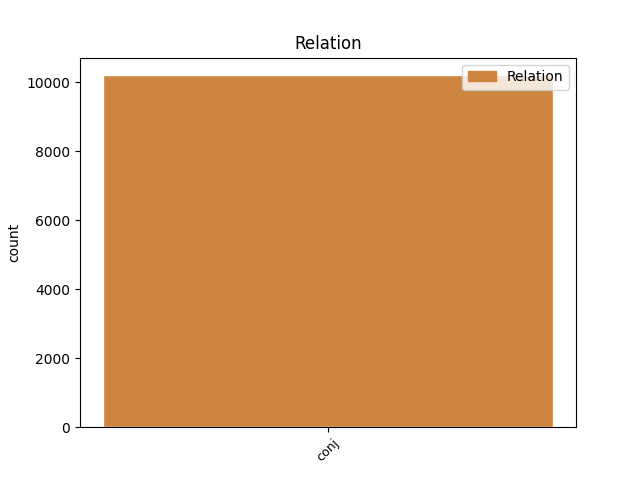
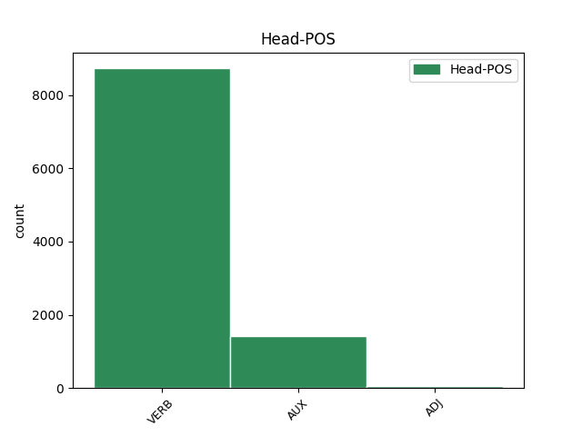
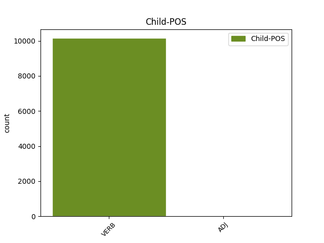

Distribution of features within this leaf



Agreement Rules sorted by frequency.
- When the dependent token is the conjunct(conj) of the head token, and the head token is VERB and the dependent token is VERB.
1 Teller _ _ _ _ 0 _ _ _
2 se _ _ _ _ 0 _ _ _
3 bránil _ _ _ _ 0 _ _ _
4 charakteristickým _ _ _ _ 0 _ _ _
5 způsobem _ _ _ _ 0 _ _ _
6 : _ _ _ _ 0 _ _ _
7 " _ _ _ _ 0 _ _ _
8 Každý _ _ _ _ 0 _ _ _
9 kojenec _ _ _ _ 0 _ _ _
10 se _ _ _ _ 0 _ _ _
11 dá dát VERB VB-S---3P-AA--- Mood=Ind|Number=Sing|Person=3|Polarity=Pos|Tense=Pres|VerbForm=Fin|Voice=Act 0 _ _ _
12 jednou _ _ _ _ 0 _ _ _
13 zneužít _ _ _ _ 0 _ _ _
14 pro _ _ _ _ 0 _ _ _
15 agresívní _ _ _ _ 0 _ _ _
16 útok _ _ _ _ 0 _ _ _
17 - _ _ _ _ 0 _ _ _
18 znamená znamenat VERB VB-S---3P-AA--- Aspect=Imp|Mood=Ind|Number=Sing|Person=3|Polarity=Pos|Tense=Pres|VerbForm=Fin|Voice=Act 11 conj _ _
19 to _ _ _ _ 0 _ _ _
20 snad _ _ _ _ 0 _ _ _
21 , _ _ _ _ 0 _ _ _
22 že _ _ _ _ 0 _ _ _
23 máme _ _ _ _ 0 _ _ _
24 přestat _ _ _ _ 0 _ _ _
25 s _ _ _ _ 0 _ _ _
26 výrobou _ _ _ _ 0 _ _ _
27 dětí _ _ _ _ 0 _ _ _
28 ? _ _ _ _ 0 _ _ _
29 " _ _ _ _ 0 _ _ _
1 Radarové _ _ _ _ 0 _ _ _
2 určování _ _ _ _ 0 _ _ _
3 drah _ _ _ _ 0 _ _ _
4 je být AUX VB-S---3P-AA--- Mood=Ind|Number=Sing|Person=3|Polarity=Pos|Tense=Pres|VerbForm=Fin|Voice=Act 0 _ _ _
5 vskutku _ _ _ _ 0 _ _ _
6 podstatně _ _ _ _ 0 _ _ _
7 přesnější _ _ _ _ 0 _ _ _
8 než _ _ _ _ 0 _ _ _
9 klasická _ _ _ _ 0 _ _ _
10 fotografická _ _ _ _ 0 _ _ _
11 metoda _ _ _ _ 0 _ _ _
12 , _ _ _ _ 0 _ _ _
13 ale _ _ _ _ 0 _ _ _
14 pozemní _ _ _ _ 0 _ _ _
15 radary _ _ _ _ 0 _ _ _
16 mají mít VERB VB-P---3P-AA--- Mood=Ind|Number=Plur|Person=3|Polarity=Pos|Tense=Pres|VerbForm=Fin|Voice=Act 4 conj _ _
17 nepatrný _ _ _ _ 0 _ _ _
18 dosah _ _ _ _ 0 _ _ _
19 . _ _ _ _ 0 _ _ _
1 Planetky _ _ _ _ 0 _ _ _
2 mají _ _ _ _ 0 _ _ _
3 obecně _ _ _ _ 0 _ _ _
4 velmi _ _ _ _ 0 _ _ _
5 tmavý _ _ _ _ 0 _ _ _
6 povrch _ _ _ _ 0 _ _ _
7 , _ _ _ _ 0 _ _ _
8 rozptylující rozptylující ADJ AGIS4-----A---- Animacy=Inan|Aspect=Imp|Case=Acc|Gender=Masc|Number=Sing|Polarity=Pos|Tense=Pres|VerbForm=Part|Voice=Act 0 _ _ _
9 a _ _ _ _ 0 _ _ _
10 odrážející odrážející ADJ AGIS4-----A---- Animacy=Inan|Aspect=Imp|Case=Acc|Gender=Masc|Number=Sing|Polarity=Pos|Tense=Pres|VerbForm=Part|Voice=Act 8 conj _ LDeriv=odrážet
11 jen _ _ _ _ 0 _ _ _
12 několik _ _ _ _ 0 _ _ _
13 procent _ _ _ _ 0 _ _ _
14 dopadajícího _ _ _ _ 0 _ _ _
15 slunečního _ _ _ _ 0 _ _ _
16 záření _ _ _ _ 0 _ _ _
17 , _ _ _ _ 0 _ _ _
18 takže _ _ _ _ 0 _ _ _
19 vůbec _ _ _ _ 0 _ _ _
20 nejsou _ _ _ _ 0 _ _ _
21 " _ _ _ _ 0 _ _ _
22 fotogenické _ _ _ _ 0 _ _ _
23 " _ _ _ _ 0 _ _ _
24 . _ _ _ _ 0 _ _ _
1 Více _ _ _ _ 0 _ _ _
2 než _ _ _ _ 0 _ _ _
3 dostatečný _ _ _ _ 0 _ _ _
4 je _ _ _ _ 0 _ _ _
5 kufr _ _ _ _ 0 _ _ _
6 , _ _ _ _ 0 _ _ _
7 nabízející nabízející ADJ AGIS1-----A---- Animacy=Inan|Aspect=Imp|Case=Nom|Gender=Masc|Number=Sing|Polarity=Pos|Tense=Pres|VerbForm=Part|Voice=Act 0 _ _ _
8 692 _ _ _ _ 0 _ _ _
9 l _ _ _ _ 0 _ _ _
10 a _ _ _ _ 0 _ _ _
11 který _ _ _ _ 0 _ _ _
12 se _ _ _ _ 0 _ _ _
13 dá dát VERB VB-S---3P-AA--- Mood=Ind|Number=Sing|Person=3|Polarity=Pos|Tense=Pres|VerbForm=Fin|Voice=Act 7 conj _ _
14 navíc _ _ _ _ 0 _ _ _
15 zvětšit _ _ _ _ 0 _ _ _
16 sklopením _ _ _ _ 0 _ _ _
17 opěradel _ _ _ _ 0 _ _ _
18 zadních _ _ _ _ 0 _ _ _
19 sedadel _ _ _ _ 0 _ _ _
20 . _ _ _ _ 0 _ _ _
Disagree Examples:
1 S _ _ _ _ 0 _ _ _
2 tím _ _ _ _ 0 _ _ _
3 ale _ _ _ _ 0 _ _ _
4 konstruktéři _ _ _ _ 0 _ _ _
5 počítali počítat VERB VpMP---XR-AA--- Animacy=Anim|Aspect=Imp|Gender=Masc|Number=Plur|Polarity=Pos|Tense=Past|VerbForm=Part|Voice=Act 0 _ _ _
6 a _ _ _ _ 0 _ _ _
7 všechny _ _ _ _ 0 _ _ _
8 přístroje _ _ _ _ 0 _ _ _
9 po _ _ _ _ 0 _ _ _
10 navázání _ _ _ _ 0 _ _ _
11 spojení _ _ _ _ 0 _ _ _
12 testují testovat VERB VB-P---3P-AA--- Aspect=Imp|Mood=Ind|Number=Plur|Person=3|Polarity=Pos|Tense=Pres|VerbForm=Fin|Voice=Act 5 conj _ _
13 jeho _ _ _ _ 0 _ _ _
14 kvalitu _ _ _ _ 0 _ _ _
15 . _ _ _ _ 0 _ _ _
1 Zatím _ _ _ _ 0 _ _ _
2 však _ _ _ _ 0 _ _ _
3 k _ _ _ _ 0 _ _ _
4 němu _ _ _ _ 0 _ _ _
5 nedošlo dojít VERB VpNS---XR-NA--- Gender=Neut|Number=Sing|Polarity=Neg|Tense=Past|VerbForm=Part|Voice=Act 0 _ _ _
6 a _ _ _ _ 0 _ _ _
7 zřejmě _ _ _ _ 0 _ _ _
8 v _ _ _ _ 0 _ _ _
9 dohledné _ _ _ _ 0 _ _ _
10 době _ _ _ _ 0 _ _ _
11 ani _ _ _ _ 0 _ _ _
12 nedojde dojít VERB VB-S---3P-NA--- Mood=Ind|Number=Sing|Person=3|Polarity=Neg|Tense=Pres|VerbForm=Fin|Voice=Act 5 conj _ SpaceAfter=No
13 . _ _ _ _ 0 _ _ _
1 Registrace _ _ _ _ 0 _ _ _
2 zájemců _ _ _ _ 0 _ _ _
3 je _ _ _ _ 0 _ _ _
4 během _ _ _ _ 0 _ _ _
5 března _ _ _ _ 0 _ _ _
6 , _ _ _ _ 0 _ _ _
7 talentové _ _ _ _ 0 _ _ _
8 zkoušky _ _ _ _ 0 _ _ _
9 se _ _ _ _ 0 _ _ _
10 konají konat VERB VB-P---3P-AA--- Aspect=Imp|Mood=Ind|Number=Plur|Person=3|Polarity=Pos|Tense=Pres|VerbForm=Fin|Voice=Act 0 _ _ _
11 18 _ _ _ _ 0 _ _ _
12 . _ _ _ _ 0 _ _ _
13 - _ _ _ _ 0 _ _ _
14 29 _ _ _ _ 0 _ _ _
15 . _ _ _ _ 0 _ _ _
16 dubna _ _ _ _ 0 _ _ _
17 a _ _ _ _ 0 _ _ _
18 veřejné _ _ _ _ 0 _ _ _
19 slosování _ _ _ _ 0 _ _ _
20 bude být VERB VB-S---3F-AA--- Mood=Ind|Number=Sing|Person=3|Polarity=Pos|Tense=Fut|VerbForm=Fin|Voice=Act 10 conj _ _
21 v _ _ _ _ 0 _ _ _
22 polovině _ _ _ _ 0 _ _ _
23 května _ _ _ _ 0 _ _ _
24 . _ _ _ _ 0 _ _ _
1 Jak _ _ _ _ 0 _ _ _
2 nám _ _ _ _ 0 _ _ _
3 sdělil _ _ _ _ 0 _ _ _
4 Vilém _ _ _ _ 0 _ _ _
5 Kohner _ _ _ _ 0 _ _ _
6 , _ _ _ _ 0 _ _ _
7 v _ _ _ _ 0 _ _ _
8 roce _ _ _ _ 0 _ _ _
9 1990 _ _ _ _ 0 _ _ _
10 začínala začínat VERB VpQW---XR-AA--- Aspect=Imp|Gender=Fem,Neut|Number=Plur,Sing|Polarity=Pos|Tense=Past|VerbForm=Part|Voice=Act 0 _ _ _
11 firma _ _ _ _ 0 _ _ _
12 Pragoreal _ _ _ _ 0 _ _ _
13 s _ _ _ _ 0 _ _ _
14 deseti _ _ _ _ 0 _ _ _
15 obecními _ _ _ _ 0 _ _ _
16 domy _ _ _ _ 0 _ _ _
17 a _ _ _ _ 0 _ _ _
18 dnes _ _ _ _ 0 _ _ _
19 má mít VERB VB-S---3P-AA--- Mood=Ind|Number=Sing|Person=3|Polarity=Pos|Tense=Pres|VerbForm=Fin|Voice=Act 10 conj _ _
20 ve _ _ _ _ 0 _ _ _
21 správě _ _ _ _ 0 _ _ _
22 již _ _ _ _ 0 _ _ _
23 250 _ _ _ _ 0 _ _ _
24 domů _ _ _ _ 0 _ _ _
25 , _ _ _ _ 0 _ _ _
26 které _ _ _ _ 0 _ _ _
27 představují _ _ _ _ 0 _ _ _
28 kolem _ _ _ _ 0 _ _ _
29 3000 _ _ _ _ 0 _ _ _
30 bytů _ _ _ _ 0 _ _ _
31 a _ _ _ _ 0 _ _ _
32 250 _ _ _ _ 0 _ _ _
33 nebytových _ _ _ _ 0 _ _ _
34 prostorů _ _ _ _ 0 _ _ _
35 . _ _ _ _ 0 _ _ _
1 Bydlím _ _ _ _ 0 _ _ _
2 v _ _ _ _ 0 _ _ _
3 bytě _ _ _ _ 0 _ _ _
4 , _ _ _ _ 0 _ _ _
5 který _ _ _ _ 0 _ _ _
6 byl být AUX VpYS---XR-AA--- Gender=Masc|Number=Sing|Polarity=Pos|Tense=Past|VerbForm=Part|Voice=Act 0 _ _ _
7 dříve _ _ _ _ 0 _ _ _
8 státní _ _ _ _ 0 _ _ _
9 , _ _ _ _ 0 _ _ _
10 teď _ _ _ _ 0 _ _ _
11 patří patřit VERB VB-S---3P-AA--- Aspect=Imp|Mood=Ind|Number=Sing|Person=3|Polarity=Pos|Tense=Pres|VerbForm=Fin|Voice=Act 6 conj _ _
12 městu _ _ _ _ 0 _ _ _
13 . _ _ _ _ 0 _ _ _